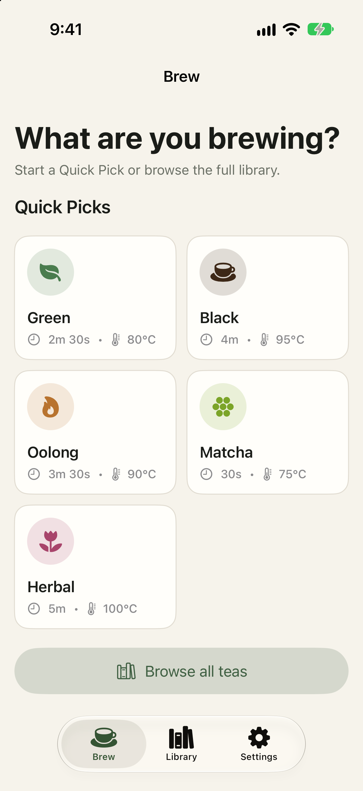
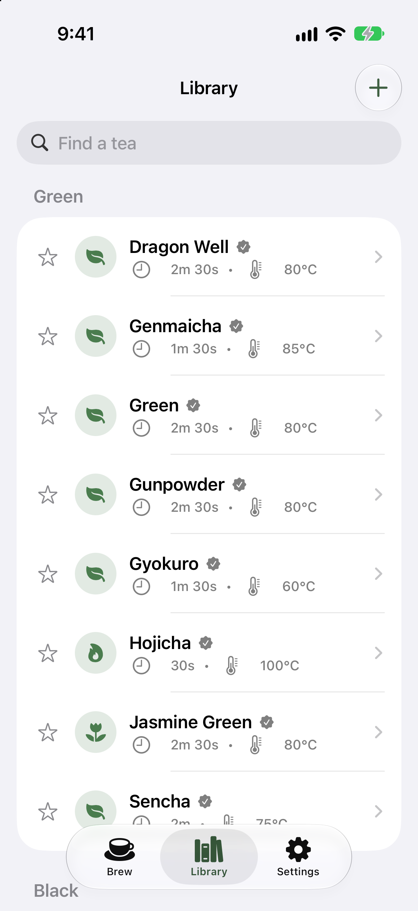
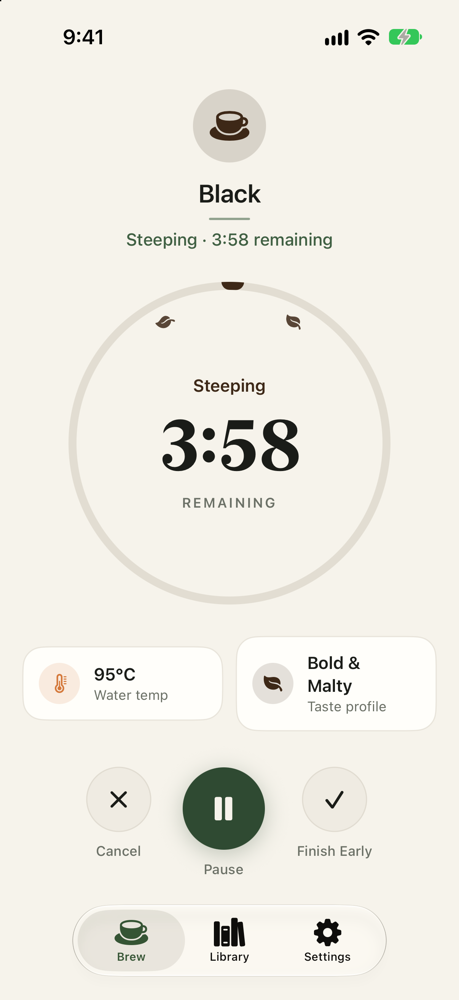
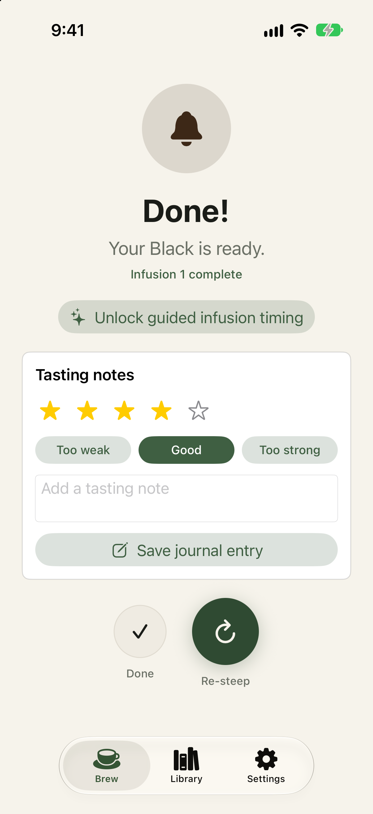
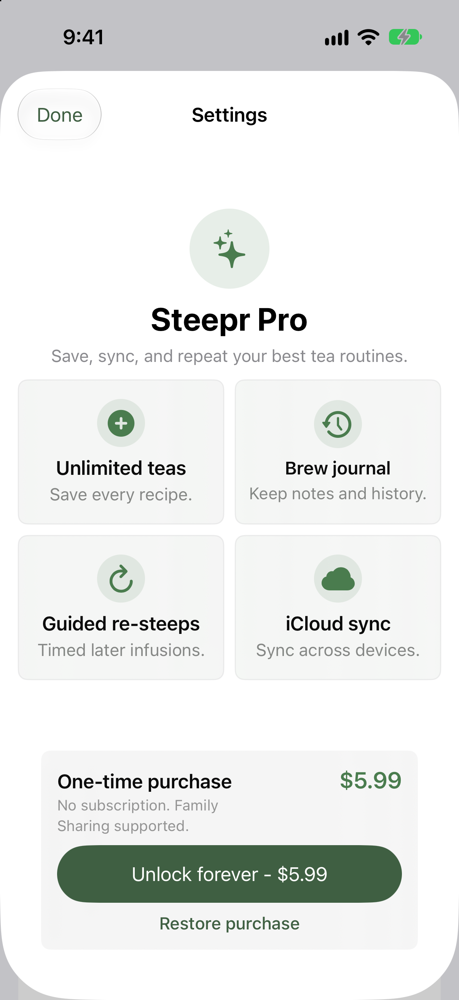

Choose a Quick Pick and start steeping straight away.

Explore 36 guided teas, organized and easy to find.

A clear countdown and a gentle alert when it is ready.

Rate the brew, add a note, and re-steep when ready.

Unlimited custom teas, guided re-steeps, and private sync.
